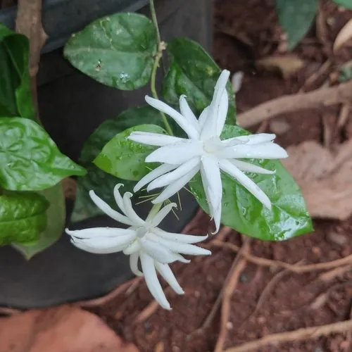

灌木与花木 · 植物界
茉莉花 Jasminum sambac

中国南方常见的常绿灌木，夏季开白色小花、香气清幽，花可窨制茉莉花茶，是著名的香花植物与文化符号。
- 分类
- 门被子植物门纲木兰纲目唇形目科木犀科属素馨属
- 栖息环境
- 海拔 800 米以下的热带亚热带地区，喜温暖湿润、光照充足
- 地理分布
- 原产印度、阿拉伯半岛一带，中国福建、广东、广西、云南等地广泛栽培
- 保护级别
- 暂无评估；中国未列入国家重点保护野生植物名录
物种志
茉莉花为常绿灌木，高可达 3 m，枝条细软、常呈攀援状；叶片对生，宽卵形至椭圆形，薄革质，全缘。花期 5–10 月，聚伞花序顶生或腋生，花冠高脚碟状、白色，花瓣常重瓣，花径 2–3 cm，香气浓郁而清幽；果实为浆果，成熟时紫黑色，但栽培条件下少见结实。
茉莉花原产印度、阿拉伯半岛一带，中国福建、广东、广西、云南、台湾等地广泛栽培，喜温暖湿润、光照充足，适宜微酸性、疏松肥沃的土壤，不耐寒。花可窨制茉莉花茶，福建福州是茉莉花茶的重要产区，福州茉莉花与茶文化系统被列为全球重要农业文化遗产；花可提取茉莉精油、制香片，根与叶可入药。茉莉花在中国文化中是纯洁与友谊的象征，也是菲律宾、印度尼西亚等国的国花或重要象征花卉。
形态与习性
- 株高可达 3 m，枝条细软
- 花期5–10 月，花白色芳香
- 果期栽培条件下少见结实
- 光照喜光，也耐半阴
- 水分喜湿润，怕积水
- 土壤微酸性、疏松肥沃的壤土
- 主要用途窨制茉莉花茶、提取茉莉精油、盆栽观赏
趣味知识
- 茉莉花香气清幽，是窨制茉莉花茶的主要原料，福州茉莉花茶久负盛名。
- 福州茉莉花与茶文化系统被列为全球重要农业文化遗产。
- 茉莉花原产印度、阿拉伯半岛一带，中国栽培历史已逾千年。
- 茉莉花在菲律宾、印度尼西亚等国被视为国花或重要的象征花卉。